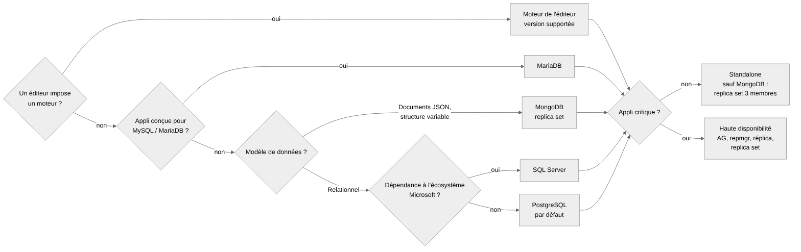

| Situation | Moteur |
|---|---|
| Progiciel ou éditeur qui impose un moteur | Celui de l'éditeur, dans une version qu'il supporte et qui est au plus près de notre version cible |
| Appli conçue pour MySQL / MariaDB (progiciel, outil open source) | MariaDB |
| Données relationnelles, appli dépendante de l'écosystème Microsoft (SSIS, SSRS, SSAS, T-SQL spécifique, appli .NET déjà liée à SQL Server) | SQL Server |
| Données relationnelles, sans contrainte particulière | PostgreSQL (par défaut) |
| Le document JSON est le modèle principal : structure variable d'un enregistrement à l'autre, peu de jointures, lecture et écriture par document entier | MongoDB |
Relationnel ou document ?
jsonb,
indexable), pas MongoDB.$lookup), mais elles coûtent cher. Si le modèle en a
besoin partout, c'est un modèle relationnel.PostgreSQL ou SQL Server ?
Données particulières
| Techno | Non critique | Critique |
|---|---|---|
| SQL Server | Standalone | Groupe de disponibilité (AG). Enterprise ; en Standard, AG de base limité à une base par AG |
| PostgreSQL | Standalone | Cluster repmgr (primaire + standby) |
| MariaDB | Standalone | Réplication primaire / réplica (standard à trancher) |
| MongoDB | Replica set de 3 membres | Replica set de 3 membres, répartis sur des hôtes distincts |
MongoDB est toujours installé en replica set, même en recette (1 membre). Les transactions et les change streams ne fonctionnent pas en standalone, et une future migration se fera par extension du replica set.
Le besoin
La volumétrie et la charge
La disponibilité
La sécurité
Les environnements
| Qui | Fait quoi |
|---|---|
| Squad | Demande, cadrage du besoin, tests |
| DBA | Choix du moteur et de l'architecture, installation, comptes, sauvegarde et supervision |
| ASR | VM, alias DNS |